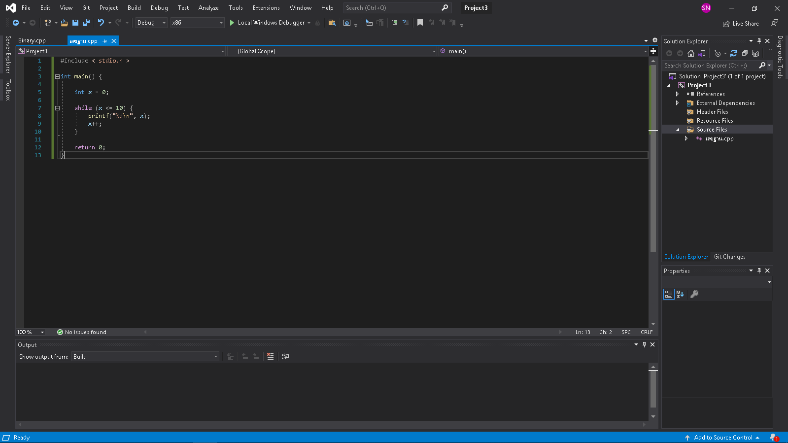
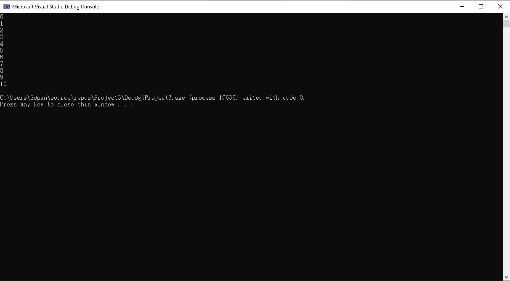

Loop While
แสดงค่า 1-10
#include < stdio.h >
int main() {
int x = 0;
while (x <= 10) {
printf("%d\n", x);
x++;
}
return 0;
}
loop while นั้นเป็นการใช้คำสั่งทำซ้ำโดยการกำหนดเงื่อนไขหรือทำตามเงื่อนไขนั้นเอง
หากเงื่อนไขยังเป็นจริงอยู่ก็จะทำไปเรื่อยๆ เเต่หากเงื่อไขเป็นเท็จเเล้วจะหลุดออกจาก loop ทันที่

#include < stdio.h >
1) #include คือคำสั่งการใช้ function ของ library < stdio.h >
int x = 0;
2) เป็นการกำหนดตัวเเปลเพื่อเก็บค่าของข้อมูลลงในตัวแปล x
while (x <= 10) {
printf("%d\n", x);
x++;
}
3) การกำหนดเงื่อนไขว่าด้วยการเเสดงตัวเลขของ x ต้องน้อยกว่าเท่ากับ 10
4) โดยการใช้ printf("%d\n", x); และใช้ x++; ในการเเสดงค่าไปเรื่อยๆตามเงื่อนไข
หากไม่มี x++; ค่าที่ได้จะเป็น Infinity หรือหาทางออกไม่ได้

return 0;